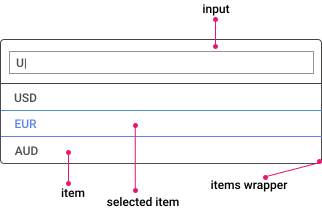

<div style="
padding: 24px;
background-color: white; height: 100%;">
  <h2 style="padding-left: 20px;">Анатомия и использование автокомплита</h2>

  <div style="margin-left: 20px;">
    Автокомплит – одна из разновидностей полей ввода и для построения UiKit можно использовать вышереализованный input.
  </div>

  <div style="margin-left: 20px;">
    <h4>Анатомия кнопки</h4>
    <div>
      
    </div>
  </div>

  <div style="display: flex;margin: 20px;">
    <div style="margin: 16px; width: 70%;">
      <h4>Автокомплит</h4>
      {{myControl.value.label}}
      <div class='wrap'>

       
        <div>
          <input-field  [shSuffix]='suffixTemplate'>
            <input placeholder="автокомплит" sh-input [shAutocomplete]='auto'  [formControl]="myControl">
          </input-field>
          <sh-autocomplete #auto [shDataSource]='filteredOptions'>
          </sh-autocomplete>
        </div>

        <ng-template #suffixTemplate>
          <div style="display: flex;
          justify-content: center;
          flex-direction: column;">search</div>
        </ng-template>

      </div>


    </div>


  </div>
  <div style="margin: 20px;">

  </div>
</div>